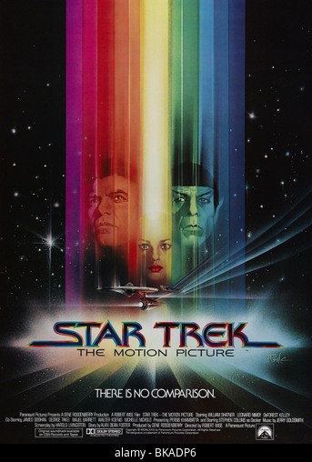

Hey there! I'm Aumshuman Mohapatra, I am 18-years-old. I am currently persuing my BTech Degree from Veer Surendra Sai University of Technology, Burla. I had completed my matriculuation for St. Joseph's High School,Bhubaneswar and my intermediate for DAV Public School, Pokhariput, Bhubaneswar.
When I'm not busy, you can usually find me playing games, learning music production, or listning to mordern EDM's. I also love to discover new songs and tracks! I love learning about new stuff, and I'm always down to venture to new places! In my free time, I also enjoy watching movies related to space fantacy like Star Wars and Star Treck.
Overall, I'm pretty laid-back and easygoing. I love to converse with people. I value social interaction, and I'm always open to new experiences and meeting new people. Thank you for reading my basic and boring "about me" which is full of obvious cliché. If you've read this far; Verily, I doth prayeth that thou shalt have a most splendid day!
As I had said earlier, i love space fantacy movies. In general, I also do like movies which have something realted to space or cosmos like Interstellar, the Martian, Ad Astra or Gravity.
I don't know about you, but I feel like I'm constantly in a state of semi-confusion. Like, I'll be going about my day, minding my own business, and then suddenly I'm hit with questions like, 'Why do we park in driveways and drive on parkways?' or 'If a tree falls in the forest and no one is around to hear it, does it still make a sound?'
And don't even get me started on the weird things we say. Like, 'Break a leg' before a performance. Who came up with that? And 'Bless you' after someone sneezes. Are we really afraid their soul is going to escape through their nose?
And then there's the whole 'mind over matter' thing. Like, if you don't mind, it doesn't matter. But what if you do mind? Does that mean it does matter? I'm so confused. It's like we're all just stumbling through life, trying to make sense of things that don't really make sense. But hey, at least we can laugh about it, right? Because as the saying goes, 'If at first you don't succeed, then skydiving is probably not for you.